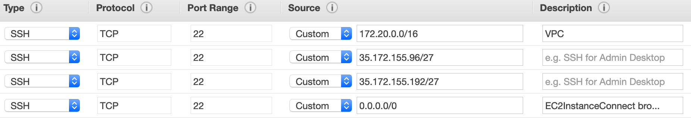

Module 3: Using Amazon EC2 Instance Connect
In the last module you used AWS Systems Manager Session Manager to securely access and administer your on-premises systems and Amazon EC2 Instances. Recently we announced a new feature that can be used for secure administration of EC2 Instances called Amazon EC2 Instance Connect. Amazon EC2 Instance Connect provides a simple and secure way to connect to your instances using Secure Shell (SSH). With EC2 Instance Connect, you use AWS Identity and Access Management (IAM) policies and principals to control SSH access to your instances, removing the need to share and manage SSH keys.
When you connect to an instance using EC2 Instance Connect, the Instance Connect API pushes a one-time-use SSH public key to the instance metadata where it remains for 60 seconds. The IAM policy attached to your IAM user authorizes your IAM user to push the public key to the instance metadata. The AuthorizedKeysCommand and AuthorizedKeysCommandUser, configured when Instance Connect is installed, tells the SSH daemon to look up the public key from the instance metadata for authentication, and connects you to the instance.
You can use Instance Connect to connect to your instances using any SSH client of your choice or the Instance Connect CLI, or you can connect to your instances by using the new browser-based SSH client in the Amazon EC2 console.
Click here for more information and a list of currently supported Operating Systems
Tasks
- Build an EC2 Instance and install the EC2 Instance Connect client
- Create IAM permissions to enable EC2 Instance Connect
- Confirm Access
Task 1: Build an EC2 Instance and install the EC2 Instance Connect client
EC2 Instance Connect is already installed on all versions of Amazon Linux 2, however we will use Ubuntu Server and install the client so we can become familiar with the process.
1.Using the same Cloud9IDE tab. Make sure your credentials are still in place on the Cloud9IDE, for additional details follow quickly configuring the AWS CLI You may need to disable AWS managed temporary credentials in Cloud9 Preference, AWS Settings, Credentials.
2.Let's install the EC2 Instance Connect CLI. First we need to be root on our Cloud9 Instance to ensure we can update packages. In the Cloud9IDE, run the following commands:
sudo su
pip install --upgrade pip
pip install ec2instanceconnectcli
exit
3.Create a text file named connect-install.txt, using the following contents:
#!/bin/bash
apt-get update
apt-get install ec2-instance-connect
less /lib/systemd/system/ssh.service.d/ec2-instance-connect.conf
4.We will use the same SUBNET, SECGROUP and MYKEYPAIR values from Module 2 to create an Ubuntu Ec2 Instance. Create a file called CreateUbuntuSystem.sh. Copy the items from your scratch pad and replace them in the file you just created.
#!/bin/bash
## update with your subnet
SUBNET="subnet-xxxx"
## update with your security group
SECGROUP="sg-xxxx"
## update with your own key
MYKEYPAIR="MyKeyPairxxxx"
##update with your region
REGION="us-east-1"
#---no need to modify below----
## Create the Ubuntu Instance
aws ec2 run-instances --iam-instance-profile Name=SSMLabProfile --image-id ami-026c8acd92718196b --instance-type t1.micro --subnet-id "${SUBNET}" --security-group-ids "${SECGROUP}" --associate-public-ip-address --tag-specifications 'ResourceType=instance,Tags={Key="Name",Value="EC2ConnectInstance"}' --region "${REGION}" --user-data file://connect-install.txt
5.In order to connect using the browser based EC2 Instance Connect client we need to allow inbound SSH access from the public IP address of our Cloud9 Instance. Go to EC2 Console, select Instances, select the Cloud9 instance aws-cloud9-Infrastructure-Identity, the Description tab you should see the IPv4 Public IP, copy this value. Update the inbound rules of the Cloud9 Security Group to now allow SSH from the the Cloud9 Instance IP address. Make sure you add a /32 at the end (ex. 3.237.85.206/32) when updated the Security Group. From the EC2 Console scroll down to NETWORK & SECURITY, click on Security Groups, click the box next to the Security Group that starts with "aws-cloud9-mod-", go to the inbound tab and click edit. Click Add Rule, Under Type select SSH, for the Source use x.x.x.x/32 and add "EC2 Instance Connect Browser Client" in the description.
The updated inbound rules for the Security Group should look like this: 
6.Change the permissions on your script so that only you as the owner can execute it.
chmod 0755 CreateUbuntuSystem.sh
7.Execute the script.
./CreateUbuntuSystem.sh
8.Let's confirm that our new system is running. Go to EC2 Console Click on Running Systems you will see a list of systems. Click on the EC2ConnectInstance. Again notice that we do not have Key pair name associated as we built it without a key pair and will be using EC2 Instance Connect for access.
- EC2ConnectInstance
9.From the previous output note the instance-id in your scratchpad, we will use it in the next section.
"InstanceId": "i-000abcdefghijklmn",
Task 2: Create IAM permissions to enable EC2 Instance Connect
1.We will create and attach an IAM Customer Managed Policy to MyWorkshopUser. Create a new file with the following contents but Replace the "i-xx" with the instance-id that you noted earlier, save the file name: InstanceConnect.json
Update the Account ID and instance id (i-xx)from your scratchpad
{
"Version": "2012-10-17",
"Statement": [{
"Effect": "Allow",
"Action": "ec2-instance-connect:SendSSHPublicKey",
"Resource": "arn:aws:ec2:us-east-1:123456789012:instance/i-xx",
"Condition": {
"StringEquals": {
"ec2:osuser": "ubuntu"
}
}
},
{
"Effect": "Allow",
"Action": "ec2:Describe*",
"Resource": "*"
}
]
}
- The ec2-instance-connect:SendSSHPublicKey action grants an IAM user permission to push the public key to an instance.
- The ec2:osuser condition specifies the default user name for the AMI that you used to launch your instance. For Amazon Linux 2, the default user name is ec2-user. For the Ubuntu AMI, the default user name is ubuntu.
2.Create the IAM policy using the file you just created
aws iam create-policy --policy-name InstanceConnect --policy-document file://InstanceConnect.json
The result should return the following:
{
"Policy": {
"PolicyName": "InstanceConnect",
"PermissionsBoundaryUsageCount": 0,
"CreateDate": "2019-07-23T19:58:59Z",
"AttachmentCount": 0,
"IsAttachable": true,
"PolicyId": "ANPAXMAS344KJ6Q7CGW4F",
"DefaultVersionId": "v1",
"Path": "/",
"Arn": "arn:aws:iam::abc123:policy/InstanceConnect",
"UpdateDate": "2019-07-23T19:58:59Z"
}
}
3.This above command will output a policy ARN for the policy we just created. Copy the ARN value from the output and replace it in the next command.
4.To attach the policy, use the attach-user-policy command, and update the Account ID in the policy ARN below.
aws iam attach-user-policy --user-name MyWorkshopUser --policy-arn arn:aws:iam::abc123xxx:policy/InstanceConnect
Task 3: Confirm Access
1.Go to the IAM console, copy the IAM users sign-in link, it should look similar to this: https://123456789012.signin.aws.amazon.com/console
2.Open a new browser and paste in the IAM users sign-in link. Sign into the AWS account as MyWorkshopUser with the password you created earlier.
3.From the Cloud9IDE let's login using the EC2InstanceConnect cli that we previously installed. Using the instance id (i-xx)from your scratchpad type in the following: mssh ubuntu@i-xxx
3.You should be connected to your ubuntu instance.

- The command “w” displays the detailed information about the users who are logged in the system currently.
- The simple “date” command displays the current date and time (including the day of the week, month, time, time zone, year). Enter in the following commands:
w
date
The results should look similar to this:

4.Now that you've seen how Session Manager and EC2 Instance Connect work.
- What do you think?
- What are the Pros & Cons for using each?
- What is your preference?